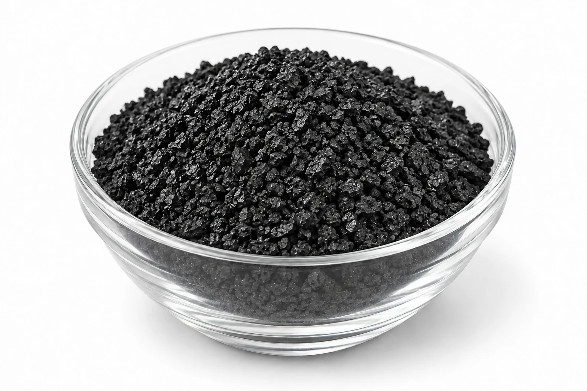

입상활성탄
야자각, 석탄, 목재 등의 원료를 활성화한 후 일정한 입도로 제조한 입자 형태의 활성탄입니다. 우수한 흡착성능과 취급성을 갖추고 있어 공기정화, VOC 제거, 악취 제거 및 수처리 등 다양한 분야에 폭넓게 적용할 수 있습니다.
규격·상세 내용 보기
공급 규격
- 4×8 / 8×16 / 8×30 / 12×30 / 12×40 / 20×40 mesh 등
- 제품 및 적용조건에 따라 다양한 규격 공급 가능
제품 특성
- 우수한 흡착성능
- 다양한 입도 선택 가능
- 높은 범용성
- 기상 및 액상 처리에 적용 가능
- 고정층 흡착설비 적용에 용이
적용 분야
- VOC 제거
- 악취 제거
- 공기정화
- 정수·폐수처리
- 공정가스 정제